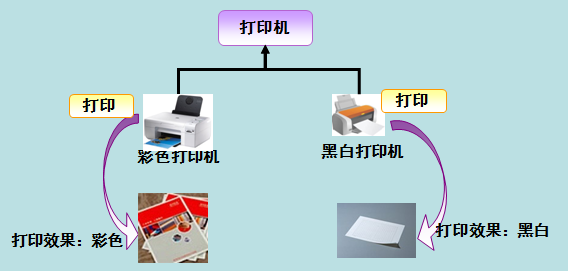

前言
接触JAVA一年有余,对于JAVA基础从未认真的进行过总结,导致一些基础问题云里雾里,故开篇对JAVA基础做一次总结,本篇为第三篇,JAVA的三大特性之多态;
正篇
多态的概念
所谓多态就是指程序中定义的引用变量所指向的具体类型和通过该引用变量发出的方法调用在编程时并不确定,而是在程序运行期间才确定,即一个引用变量到底会指向哪个类的实例对象,该引用变量发出的方法调用到底是哪个类中实现的方法,必须在由程序运行期间才能决定。因为在程序运行时才确定具体的类,这样,不用修改源程序代码,就可以让引用变量绑定到各种不同的类实现上,从而导致该引用调用的具体方法随之改变,即不修改程序代码就可以改变程序运行时所绑定的具体代码,让程序可以选择多个运行状态,这就是多态性。

如上图,多态性是对象多种表现形式的体现,同一个事件发生在不同的对象上会产生不同得结果
代码实例
父类代码
2
3
4
5
6
7
8
9
10
11
12
13
14
public Animal() {
super();
}
public void eat() {
System.out.println("Animal正在吃");
}
public void sleep() {
System.out.println("Animal正在睡");
}
}
子类代码
2
3
4
5
6
7
8
9
10
11
12
13
14
15
16
17
18
19
20
21
22
23
24
25
26
27
28
29
30
31
32
33
34
35
36
public class Mouse extends Animal {
public Mouse() {
super();
}
@Override
public void eat() {
System.out.println("Mouse eat");
}
@Override
public void sleep() {
System.out.println("Mouse sleep");
}
}
//继承父类Animal,并重写了父类的方法
public class Penguin extends Animal {
public Penguin() {
super();
}
@Override
public void eat() {
System.out.println("penguin eat");
}
@Override
public void sleep() {
System.out.println("penguin sleep");
}
}
测试输出
2
3
4
5
6
7
public static void main(String[] args) {
Animal a = new Mouse();
a.eat();
//输出结果: Mouse eat
}
}
以上代码可以看出,向上转型之后,由于子类重写了父类的方法,在调用时,程序选择了子类的方法来运行,这也就是在同一个事件发生在不同的对象上时,就会产生不同的结果.
实现多态的技术
实现多态的技术称为:动态绑定（dynamic binding）,是指在执行期间判断所引用对象的实际类型,根据其实际的类型调用其相应的方法。
多态的作用
消除类型之间的耦合关系
多态存在的必要条件
一、要有继承；
二、要有重写；
三、父类引用指向子类对象。
继承链中对象方法调用的优先级
this.show(O)、super.show(O)、this.show((super)O)、super.show((super)O)。
多态的实现方式
方式一: 重写
方式二: 接口
方式三: 抽象类和抽象方法
经典案例
1 | public class A { |
继承链的优先级和案例的分析方法来源于该博客: http://cmsblogs.com/?p=52
ps:多态贯穿于java整个学习,比如在异常处理时写catch语句,我们规定必须子类异常写在前,父类异常写在后。为什么呢？原因就是多态了。我们的 catch语句格式：catch（Exception e）。java程序在产生异常时会自动生成一个异常对象,如果先产生一个子类异常,并且父类异常写在前,那么根据多态肯定会执行此catch语句,执行完 一条catch语句后将会跳出。
总结
通过本章节,可以理解在继承中,只要子类重写了父类的方法,那么调用的就是子类的方法,如果子类没有重写父类的方法,将会调用父类的方法,如果父类也没有实现调用的方法,那就去父类的父类中查找调用的方法,一层一层的查找,来得出在继承中多态是如何在同一个事件中,发生在不同的对象上会产生不同得结果,受益匪浅;